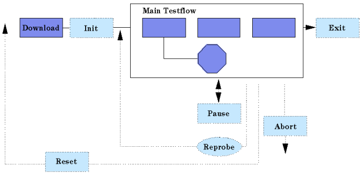

Download Testsuite
With a Download testsuite, the pin configuration setup selected on the Setup Page of the Testflow Editor will be downloaded initially.
If there is no Download testsuite, the initialization is done with the first execution of the testflow.

Functional changes
- Introduced before SmarTest 6.3.2